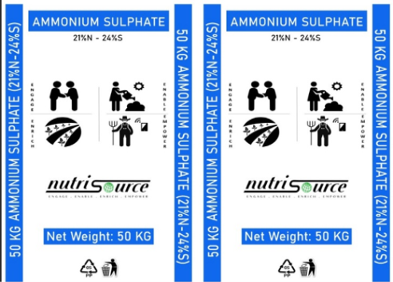
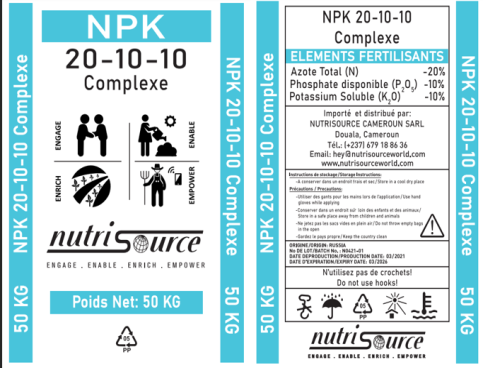
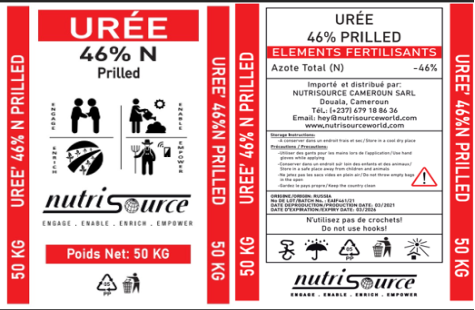

NutriSource Sulfate d’ammonium (21 %N-24 %S)
Le sulfate d’ammonium NSW est livré sous forme cristalline et se compose de 21% d’azote et 24% de soufre dans un seul sac d’engrais. La SA est l’un des engrais les plus répandus dans l’agriculture et peut être utilisée sur tout type de culture agricole (des pommes de terre, des oléagineux, des céréales aux agrumes), quel que soit le type de sols utilisés pour la plantation, qu’ils soient acides ou alcalins.
Avantages :
• Soufre - augmente la teneur en huile des oléagineux, la production de protéines et l’activation des enzymes métaboliques
• Azote (forme ammoniacale) – prêt à être disponible pour la plante pendant le cycle de vie de l’usine.
Posologie/Recommandation :
• Selon les recommandations standard pour les cultures et les valeurs d’analyse du sol
• Recommandé pour toutes les cultures Bâle comme application de top-dressing.

NutriSource NPK 20:10:10 Complexe
NPK 20-10-10 est un engrais complexe qui est le meilleur pour la germination des graines, l’accélération de la formation et du développement des racines, et l’encouragement de produits végétaux de haute qualité.
Avantages :
Méthode d’utilisation: Basal & Foliar

NutriSource urée prilled (N 46%)
L’urée est une source d’azote, qui est un nutriment essentiel crucial pour la croissance et le développement des cultures. L’urée est l’engrais azoté le plus important en raison de sa teneur élevée en azote (46%N).
Mode d’emploi :
L’urée doit être appliquée au moment du semis comme base et dans les cultures sur pied comme top dressing. La moitié de la dose recommandée au moment du semis et la moitié restante après 30 jours en 2-3 parties égales à intervalles de 15 à 30 jours selon la culture.
Avantages:
• Aidez les plantes à produire de plus grandes fleurs, des fruits et des légumes. Puisque ce type d’engrais permet aux plantes de pousser rapidement.
• Libération lente d’azote en prolongeant l’hydrolyse de l’urée pour une période plus longue.
• Il améliore la croissance et le rendement de la culture.
• Réduit les pertes d’azote par lessivage et dénitrification.
Posologie/Recommandation
• Selon les recommandations standard pour les cultures et les valeurs d’analyse du sol
• Recommandé pour toutes les cultures comme application de top-dressing